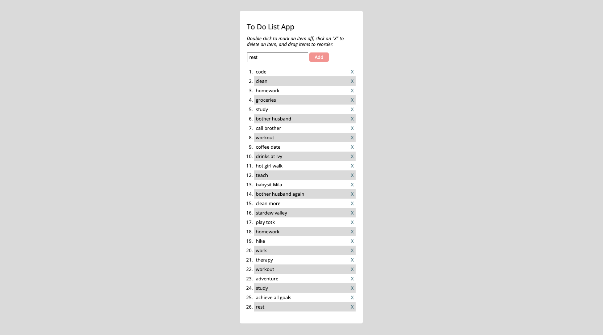

To Do List App
Github LinkThis was the first application we built in the Full-Stack Immersion program with Career Foundry. We applied javaScript for the first time and explored using jQuery.
This App allows users to easily create, organize, and manage a list of tasks on a digital platform.
- The user can add a new item to a list of items.
- The user can cross out an item from the list of items.
- The user can delete an item from the list of items.
- The user can change the order of the items on the list of items.
This being my first introduction to Javascript, I learned a lot about the layout of functions and how to interact with the DOM. Using jQuery made this much easier and was also the first time I started to see how importing a library can impact a project.